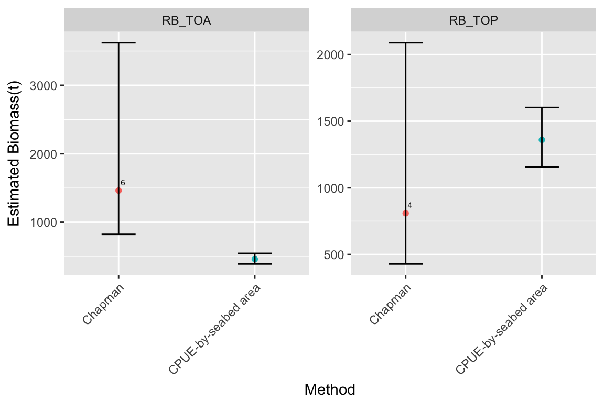

This vignette describes the BERT: Biomass Estimation for Research on Toothfish package. The BERT package was developed to assist CCAMLR’s Working Groups with the estimation of the local biomass of toothfish in Research Blocks/data-poor areas.
The main purpose of this package is to provide functions that:
(1) can be used to estimate local biomass using the most up-to-date CPUE-by-seabed area and Chapman mark-recapture biomass estimation methods agreed by WG-FSA and WG-SAM and;
(2) format the necessary CCAMLR data for input into the biomass estimation method functions
Methods used to estimate local toothfish biomass in the data-poor CCAMLR fisheries include a CPUE-by-seabed-area analogy method (Agnew et al, 2009) and a Chapman tag-recapture estimator (Hillary et al, 2009). Both methods have undergone modification in the working group meetings over the past 10 years with changes to formulas, fixed parameter values, appropriate time series of catch and tagging data for inclusion and the data quality and cleaning processes applied. To address this issue WG-SAM-16 agreed (and documented) a standardised default method of applying the CPUE-by-seabed area and the Chapman tag release-recapture methods of estimating biomass, and requested that the Secretariat apply these methods to provide a single set of biomass estimates of D. mawsoni or D. eleginoides in Research Blocks in Subareas 58.4 and 48.6 that could be further evaluated by WG-FSA (SC-CAMLR-XXXV, Annex 5, paragraph 2.28).
In this vignette provides examples of both methods that are similar in lay-out to the R-markdown developed by the Secretariat for WG-FSA-17 except instead of using “real data” we provide simulated datasets for a Research block that targets Antarctic toothfish (i.e. RB_TOA) and Research block that targets Patagonian toothfish (i.e. RB_TOP). Given data are simulated there are no data extract and processing steps included here, but see paper WG-FSA-17/42 or the R markdown document referred to above for details on these steps.
To work through the examples in the vignette you will need to install the BERT R package from github. In order to install from github you will firstly need to install devtools (i.e. install.packages("devtools")) and then use the following command:
devtools::install_github("ccamlr/BERT",build_vignettes=TRUE,auth_token="7ef7614738c2b3463fc791d4f22a719d61be35fa")A brief explanation of the data that is collected in CCAMLR’s toothfish research programs that are required for local biomass estimation is provided below, but see Appendix A of WG-FSA-16/27 for more detailed metadata on each of the required data fields.
Catch data that are collected during toothfish research fishing, and necessary for local biomass estimation, are stored in CCAMLR’s database at a haul-by-haul resolution. Each toothfish longline that is set and hauled will have unique id (ID) and information on the set start (SET_START_DATE) and end dates (SET_END_DATE) and haul start (HAUL_START_DATE) and end (HAUL_END_DATE) dates as well as their geographic positions (e.g. SET_START_LATITUDE,SET_START_LONGITUDE, SET_END_LATITUDE,SET_END_LONGITUDE) and the length of the longline (LINE_LENGTH). The SET_START_DATE is used to assign the CCAMLR fishing season (Season) and the set start and end geographic positions are used to assign a Research Block (RESEARCH_BLOCK_CODE) or Reference Area (REF_AREA_CODE) code. Information on what species were caught (SPECIES_CODE) and their quantities (CAUGHT_KG_TOTAL) on each longline that is hauled is also recorded. The Secretariat has developed routine data extracts for catch data in Research blocks and Reference areas to be provided in csv files (see WG-FSA-16/27).
It is also a requirement to tag and release fish at a rate of 5 fish per tonne, in most areas, where toothfish research is being conducted. Detailed information is recorded on each fish that is tagged and released and any tagged fish recaptured. Tagged fish release data include a cruise identification number (CRUISE_ID) and haul identification number (HAUL_ID) and information on the species (SPECIES_CODE), the geographic position of the release (that is used to assign a RESEARCH_BLOCK_CODE and ASD_CODE) and the length of the fish (LENGTH_CM). Fish are not weighed when tagged, to minimise handling time, but the weight of released fish can be estimated using a modelled length-weight relationship. The estimated weight of the released fish is added to the total weight of fish retained for each haul; which is referred to as substantial catch. The Secretariat has developed routine data extracts of tagged fish release data in Research blocks and Reference areas to be stored in csv files (see WG-FSA-16/27).
The toothfish length and weight data required for modelling the length-weight relationship is recorded by CCAMLR’s Scientific Observers when they are collecting biological information on fish that are retained as catch. The species (SPECIES_CODE), length (LENGTH_CM) and weight of (WEIGHT_KG) fish retained from the Subarea or Division (ASD_CODE) that the Research Block or Reference Area was located in are required for modelling the length-weight relationship that is then used in estimating released fish weights. The Secretariat has developed routine data extracts of length-weight data in Research blocks and Reference areas to be stored in csv files (see WG-FSA-16/27).
When a tagged fish is recaptured, similar information is recorded on the recaptured fish as was recorded on its release. For the purpose of local biomass estimation, necessary data include the CCAMLR fishing season of release (SEASON_RELEASE) and recapture (SEASON_RECAPTURE), the Research Block of release (RESEARCH_BLOCK_RELEASE) and recapture (RESEARCH_BLOCK_RECAPTURE) and the cruise id (CRUISE_ID_RECAPTURE) and set id (SET_ID_RECAPTURE). The Secretariat has developed routine data extracts of matched tagged fish release and recapture data in Research blocks in csv files (see WG-FSA-16/27).
Local biomass is estimated annually (i.e. in each CCAMLR fishing season for which data are available). This requires summing data across hauls within a fishing season. The functions in this R package have been developed to estimate uncertainty around the annual estimates. Uncertainty is estimated through bootstrapping the haul data in a fishing season and this is why data are required at a haul-by-haul (rather than an aggregated annual) resolution.
The CCAMLR data necessary for both methods can be provided in the same data extracts, but the CPUE-by-seabed area method require catch, length-weight and tagged fish release data from Research blocks and Reference Areas while Chapman-mark recapture method requires catch, tagged fish release and recapture data from the Research Block. These data extracts can be provided by the CCAMLR Secretariat (see WG-FSA-16/27 for further details on data extracts), but need to be formally requested in accordance with CCAMLR’s data access rules. If data extracts are obtained in csv format from the Secretariat these can be loaded into R using the load_data function in the BERT package.
Due to CCAMLR’s data access rules, the catch, tagged fish release, length-weight and matched tagged fish release and recapture datasets described above were simulated for this vignette to represent data from Research Block and Reference Areas that were similar to the data that would be provided in data extracts. For metadata on the four simulated datasets for Research Blocks see:
catch data: ?catch_data_sim_RB released tagged fish data: ?release_data_sim_RB length and weight data: ?length_weight_data_sim_RB matched tagged fish release and recapture: ?recapture_data_sim_RB
And for the three Reference Areas datasets see: catch data: ?catch_data_sim_RefArea released tagged fish data: ?release_data_sim_RefArea length and weight data: ?length_weight_data_sim_RefArea
For code to re-simulate data see inst/create_sim_data.R
Fish that are tagged and released are not weighed, but their length is measured. Weights from these released fish are required to estimate the total catch (i.e. not just retained catch) for both the CPUE-by-seabed area and the Chapman mark-recapture biomass estimation methods.
The weights of released fish are estimated using a log-liner model, that is parameterised using length and weight data collected by observers on retained catch (i.e. the length-weight data from the ASD that the Research block is situated in is used to parameterise this model). This is done using the est_fish_weight function.
Using the simulated release data and length-weight data from Research Blocks and Reference Areas. The weights of tagged fish releases are estimated and added to the existing data frames as EST_WEIGHT_KG For input requirements for this function see the example below and/or ?est_fish_weight
# load BERT package
library(BERT)
# select length_weight data fields in release data required for input into the est_fish_weight function
data_store_release_RB_input <- data.frame(release_data_sim_RB$ASD_CODE,release_data_sim_RB$SEASON,
release_data_sim_RB$CRUISE_ID,release_data_sim_RB$SET_ID,
release_data_sim_RB$SPECIES_CODE,release_data_sim_RB$LENGTH_CM)
release_data_sim_RB$EST_WEIGHT_KG <- est_fish_weight(length_weight_data = length_weight_data_sim_RB,
length_data = data_store_release_RB_input)
# do the same for Reference Area tagged fish releases
data_store_release_RefArea_input <- data.frame(release_data_sim_RefArea$ASD_CODE,release_data_sim_RefArea$SEASON,
release_data_sim_RefArea$CRUISE_ID,release_data_sim_RefArea$SET_ID,
release_data_sim_RefArea$SPECIES_CODE,release_data_sim_RefArea$LENGTH_CM)
release_data_sim_RefArea$EST_WEIGHT_KG <- est_fish_weight(length_weight_data = length_weight_data_sim_RefArea,
length_data = data_store_release_RefArea_input)The point estimation of local biomass using the catch-per-unit-effort (CPUE) by seabed area analogy was agreed at WG-SAM-16; 2.28 and defined as
\[ B_x = \frac{I_x \times A_x \times B_r}{I_r \times Ar} \]
Where the subscripts \(x\) and \(r\) denote the parameter from the research block and reference area respectively. Different reference areas were selected for Research Blocks depending on the target species. WG-SAM-16 agreed that the Ross Sea Region (88.1, 88.2 and the units ) should be used as a reference area for Research Blocks that target D.mawsoni and the HIMI area (Division 58.5.2) should be used as a reference area for Research Blocks that target D.eleginoides (WG-SAM-16, para 2.30).
\(Ix\) is the median of the haul-by-haul CPUE (kg/km) over the past three seasons in which fishing has occurred in Research Block \(x\). For example, if fishing had occurred in Research block \(x\) in 2017, 2015 and 2014, then all of these hauls will be included in calculating the median CPUE for the 2017 fishing season.
\(Ir\) is the median of the haul by haul CPUE (kg/km) over the past three seasons in the relevant Reference Area that relates to the season of the stock assessment that was used to generate the reference area Biomass \(r\). For example if the 2017 assessment was used to generate the reference area biomass then hauls from the 2017,2016 and 2015 seasons would be included
In both \(Ix\) and \(Ir\) The total fish weight included in the CPUE included the total catch (kg) on a haul, includes fish that were tagged and released (where the weight of released fish is estimated using the length–weight relationship for that area) is divided by the length of line (km) reported for that set (WG-SAM-16, paragraph 2.36).
\(Ax\) is the seabed area (km2) in Research Block x in the depth range 600–1800 m using a processed version of the GEBCO 2014 dataset.\(Ar\) is the seabed area (km2) in the same depth range (i.e. 600-1800m) in the reference area \(r\). Consistent with advice from WG-SAM-17, the seabed area included in the Ross Sea reference area (i.e. RSR_open) only included Small Scale Research Units (SSRUs) that are open to fishing (para 3.11, WG-SAM-17). In the HIMI reference area \(Ar\)=117067.75 km2 and in the RSR_open reference area \(Ar\)=120928.75 km2. \(Br\) was the current vulnerable biomass (para 3.10 WG-SAM-17) from the 2017 integrated assessments in the Ross Sea, which was estimated to be 92693.07 t of Antarctic toothfish, and the HIMI assessment, which were estimated to be 43993.03 t of Patagonian toothfish. Variation in the reference areas biomass estimates were included with CV values of 0.073 from the Ross Sea Assessment and 0.072 from the HIMI Assessment. Mean and CV values were provided by New Zealand Scientists for the Ross Sea Assessment and Australian Scientists for the HIMI assessment.
The uncertainty around the point estimates was calculated using a non-parametric bootstrap (Efron and Tibshirani 1993; Chernick 2008). The following steps were applied
\[ B^i_x = \frac{I^i_x \times A_x \times B^i_r}{I^i_r \times A_r}. \]
The areas of the research block and the reference area (\(A_x\),\(A_r\)) were assumed to be known without error and are therefore not contributed to the uncertainty in the bootstrap. See ?CPUE_seabed
The uncertainty is then quantified by taking quantiles of the \(B^i_x\), for example, 95% confidence intervals are the 0.025 and 0.975 quantiles.
In this example toothfish biomass is estimated using the CPUE-by-seabed area method in RB_TOA based on simulated data and the estimated released fish weights described above.
Data from Research block RB_TOA are selected
# use RB as an index
RB <- "RB_TOA"
# restrict Release data to relevant research block
Release_data_RB <- release_data_sim_RB[release_data_sim_RB[["RESEARCH_BLOCK_CODE"]]%in%RB,]
# restrict data to the relevant Research Block
Catch_data_RB <- catch_data_sim_RB[catch_data_sim_RB[["RESEARCH_BLOCK_CODE"]]%in%RB,]Research Blocks where TOP is targeted is specified and the inverse of this infers that TOA is targeted. In this example the target species will be TOA
# note only 3 Research Blocks currently target TOP and all others target TOA
TOP_target_RBs <- c("RB_TOP","5844b_1","5844b_2")
## make sure you specifiy target species data
target_species <- ifelse(RB%in%TOP_target_RBs,"TOP","TOA")Tagged fish release and catch data in Research Block RB_TOA is subset to include only columns of data that are relevant to the CPUE-by-seabed area estimates
# select data for input into biomass estimate function see ?extract_catch_data_cpue_est param release_data
Release_data_RB <- data.frame(Release_data_RB$SEASON,Release_data_RB$CRUISE_ID,
Release_data_RB$SET_ID,Release_data_RB$SPECIES_CODE,Release_data_RB$EST_WEIGHT_KG)
# select data for input into biomass estimate function see ?extract_catch_data_cpue_est param catch_data
Catch_data_RB<- data.frame(Catch_data_RB$ID,Catch_data_RB$Season,Catch_data_RB$CRUISE_ID,
Catch_data_RB$SET_ID,Catch_data_RB$SPECIES_CODE,Catch_data_RB$CAUGHT_KG_TOTAL,
Catch_data_RB$LINE_LENGTH)The Reference Areas for a Research Block is based on the species that is being targetted. As outlined in the general methods above the Reference Area for Research Blocks where TOA are targetted is the Ross Sea Region (RSR). Hence if the Research Block does not target TOP, then it targets TOA and the the Ref_area is “RSR”
Ref_area <- ifelse(RB%in%TOP_target_RBs,"HIMI","RSR")Data from the Relevant Reference Area (i.e. the Ross Sea Region) are selected
Release_data_RefArea <- release_data_sim_RefArea[release_data_sim_RefArea[["REF_AREA_CODE"]]%in%Ref_area,]
Catch_data_RefArea <- catch_data_sim_RefArea[catch_data_sim_RefArea[["REF_AREA_CODE"]]%in%Ref_area,]Tagged fish release and catch data from the Reference Area are subset to include only columns that are relevant to the CPUE-by-seabed area estimates
# select data for input into biomass estimate function see ?extract_catch_data_cpue_est param release_data
Release_data_RefArea <- data.frame(Release_data_RefArea$SEASON,Release_data_RefArea$CRUISE_ID,
Release_data_RefArea$SET_ID,Release_data_RefArea$SPECIES_CODE,
Release_data_RefArea$EST_WEIGHT_KG)
Catch_data_RefArea <- data.frame(Catch_data_RefArea$ID,Catch_data_RefArea$Season,Catch_data_RefArea$CRUISE_ID,
Catch_data_RefArea$SET_ID,Catch_data_RefArea$SPECIES_CODE,
Catch_data_RefArea$CAUGHT_KG_TOTAL,Catch_data_RefArea$LINE_LENGTH)If the Reference Area is “RSR” then the Reference area biomass (i.e. Ref_area_biomass) is 92693.07 tonnes - as this was the estimated vulnerable biomass from the 2017 stock assessment. The Ref_area_CV from the Ross Sea stock assessement for the vulnerable biomass was 0.073
# 2017 values from WG-FSA-17
Ref_area_biomass <-ifelse(Ref_area%in%"HIMI",43993.03,92693.07)
Ref_area_CVs <-ifelse(Ref_area%in%"HIMI",0.072,0.073)Annual estimates are made for each CCAMLR fishing season for which data are available and all parameter values that are used in calculating biomass are stored with each estimate in store_annual_estimates. Survey_est are the seasons for which catch data were available, which makes estimation of biomass possible. In this example there is only a single year of data included so there is only one annual estimate.
Survey_est<- sort(unique(Catch_data_RB$Catch_data_RB.Season))
store_annual_estimates<-data.frame(matrix(0,nrow=length(Survey_est),ncol=11))
names(store_annual_estimates)=c("RB","Species","Season","Ref_area","RefArea_seabed_area",
"RefArea_N_Hauls","RB_seabedarea","RB_N_Hauls","Est","CI_lower","CI_upper")
store_annual_estimates$Season <- Survey_estIn Research Blocks the median CPUE can includes data from the last three seasons in which fishing occured. Depending on the season for which biomass is being estimated (i.e. \(y\)) data from all seasons will be included if there are less than three seasons, but if there are more than three seasons of data then this is restricted to the last three years.
for (y in Survey_est){
# select the last three seasons in which fishing occurred
Seasons <- seq(min(Survey_est),y,1)
if(length(Seasons)>3){Seasons <- Survey_est[(which(Survey_est%in%y)-2):which(Survey_est%in%y)]
}else{Seasons <- Survey_est[1:which(Survey_est%in%y)]}
}With the relevant seasons to include in Research Blocks specified, the extract_catch_data_cpue_est function uses the catch data and tagged fish release data from Research Blocks to format CPUE data for input into the CPUE_seabed function below.
RB_haul_data <- extract_catch_data_cpue_est(catch_data=Catch_data_RB,release_data=Release_data_RB,
measure ="weights",target_species = target_species,
catch_season = Seasons)The first six hauls from the single vector of simulated CPUE values from RB_TOA for the 2017 season looks like this:
head(RB_haul_data)
#> [1] 154.51985 106.31354 111.66144 185.84834 97.31474 83.08652The seasons for which CPUE values should be calculated in Reference Areas is specified below. Given the most recent estimated vulnerable biomass in the Reference Areas are from 2017 and the Reference Area is the Ross Sea Region then CPUE values from each haul over the last three seasons (i.e. 2017,2016 and 2015) are included, but given only data from 2017 were simulated then only one seasons of data is included
# get hauls in last 3 seasons in the Reference Areas that match the latest assessment period
# for HIMI 2017 hauls are excluded because the season and data were considered incomplete,
# but for the simulation we assume complete data in 2017
Ref_area_seasons <-c(2015,2016,2017)With the relevant seasons to include in the Reference Area specified, the extract_catch_data_cpue_est function uses the simulated catch data and tagged fish release data from the Ross Sea Reference area to format CPUE data for input into the CPUE_seabed function below.
RefArea_haul_data_test <- extract_catch_data_cpue_est(catch_data=Catch_data_RefArea,
release_data=Release_data_RefArea,
measure ="weights",
target_species = target_species,
catch_season = Ref_area_seasons)Fishable seabed area values for a number of Research Blocks are stored in the BERT R package as a two column dataframe called RB_seabed_area. The first column contains the Research Block codes that were used in calculating biomass estimates for WG-FSA-17 and the second column includes the planimetric seabed area values. In the example below the RB_seabed_area parameter value is selected for Research Block RB_TOA. For further information on this data see ?RB_seabed_area
# remove survey year col from the matrix for input into multi release function
RB_Seabed_area <- RB_seabed_area$Seabed_area[RB_seabed_area$RB%in%RB]Fishable seabed area values for Reference Areas are also stored in the BERT R package as a two column dataframe called Ref_area_seabed_area. The first column contains the Reference Area codes that were used in calculating biomass estimates for WG-FSA-17 and the second column includes the planimetric seabed area values for each Research Block. Given it was agreed at WG-SAM-17 the seabed area in the Ross Sea Reference Area should only include those areas that are open to fishing, the “RSR_open” area is selected. For further information on these data see ?Ref_area_seabed_area
# change Reference area seabed area RSR_open
if(Ref_area=="RSR"){
RefArea_Seabed_area <-Ref_area_seabed_area$Seabed_area[Ref_area_seabed_area$RefArea%in%"RSR_open"]
}else{
RefArea_Seabed_area <-Ref_area_seabed_area$Seabed_area[Ref_area_seabed_area$RefArea%in%Ref_area]
}Specify number of bootstrap replicates
# number of bootstrap replicate samples
n_boot <- 10000The point CPUE-by-seabed area biomass estimate of TOA in RB_TOA (i.e. Est) for the 2017 season is calculated using the cpue_bio function that accepts a single value for each parameter input. The cpue_bio function is called by the CPUE_seabed function that accepts vector data (which is the haul-by-haul) for catch data inputs. The CPUE_seabed function returns the point estimate in obj$est. The output from the cpue_bootrap function stored in CPUE_seabed_boot also returns the point estimate in summary(CPUE_seabed_boot)["Est"] and the lower 95% confidence interval in summary(CPUE_seabed_boot)["2.5%"] and upper 95% confidence interval in summary(CPUE_seabed_boot)["97.5%"].
obj <- CPUE_seabed(fish_CPUE_data=RB_haul_data,fish_area=RB_Seabed_area,
ref_CPUE_data=RefArea_haul_data_test,
ref_area=RefArea_Seabed_area,ref_bio=Ref_area_biomass,ref_bio_cv = Ref_area_CVs)
CPUE_seabed_boot <- cpue_bootstrap(obj,n_boot)
store_annual_estimates$RB[Survey_est%in%y] <- RB
store_annual_estimates$Species[Survey_est%in%y] <- as.character(target_species)
store_annual_estimates$Ref_area[Survey_est%in%y] <- Ref_area
store_annual_estimates$RefArea_seabed_area[Survey_est%in%y] <- RefArea_Seabed_area
store_annual_estimates$RefArea_biomass[Survey_est%in%y] <- Ref_area_biomass
store_annual_estimates$RefArea_N_Hauls[Survey_est%in%y] <-length(RefArea_haul_data_test)
store_annual_estimates$RefArea_CPUE[Survey_est%in%y] <- as.numeric(obj$data["ref_CPUE_est"])
store_annual_estimates$RB_seabedarea[Survey_est%in%y] <- RB_Seabed_area
store_annual_estimates$RB_N_Hauls[Survey_est%in%y] <- length(RB_haul_data)
store_annual_estimates$RB_CPUE[Survey_est%in%y] <- as.numeric(obj$data["fish_CPUE_est"])
store_annual_estimates$Est[Survey_est%in%y] <- summary(CPUE_seabed_boot)["Est"]
store_annual_estimates$CI_lower[Survey_est%in%y] <- summary(CPUE_seabed_boot)["2.5%"]
store_annual_estimates$CI_upper[Survey_est%in%y] <- summary(CPUE_seabed_boot)["97.5%"]
store_biomass_estimates_CPUE <- subset(store_annual_estimates,select= c(RB,Species,Season,RB_N_Hauls,Est,CI_lower,CI_upper))
store_biomass_estimates_CPUE$Method<-rep("CPUE-by-seabed area",nrow(store_biomass_estimates_CPUE))The point estimation of local biomass using the Chapman mark-recapture-based method was agreed at WG-SAM-16; 2.28 and defined as:
\[B_j = \frac{c_j(n_{j-1}+1)}{mx_j+1}\]
where \(n_{j–1}\) is the number of tagged fish available for recapture at the end of the season prior to season \(j\), \(c_j\) is the catch in season \(j\) (as with CPUE the catch includes fish that are tagged and released, as these fish are scanned for tags upon capture) and \(mx_j\) is the number of tagged fish recaptured in season \(j\) (excluding within-season recaptures).
The agreed calculation for the number of tagged fish available for recapture is:
\[ N_j = \begin{cases} j=1, r_j(1-t)e^{-(f+M)}-m_j \\ j>1, n_{j-1} \end{cases} \]
\(r_j\) is the total number of fish released in CCAMLR fishing season \(j\), \(m_j\) is the total number of tagged fish recaptured in CCAMLR fishing season \(j\) and \(n_{j–1}\) is the number of tagged fish available for recapture at the end of the season prior to season \(j\), \(t\) is the post-tagging mortality rate of 0.1 (Agnew 2006), \(f\) is the annual tag loss rate which is 0.0084 (WG-SAM-11/18) \(M\) is natural mortality where \(M\) = 0.13 for Antarctic toothfish (D. mawsoni) (WG-FSA-SAM-06/08) and 0.155 for Patagonian toothfish (D. eleginoides) (Candy 2011).
In the absence of an estimate of movement, the number of tagged fish available for recapture was calculated using a three-year moving window that was applied to release data to account for potential movement-related bias (SC-CAMLR-XXXV/05, paragraph 2.34). However, WG-FSA-17 agreed that only tagged fish that had been at liberty for 1 year should be included in the tagged fish available for recapture estimates in Research Blocks 486_2 and 486_3 (WG-FSA-17, paragraph 4.80). Different functions are called in this R package depending on whether multiple years of tagged fish releases or just a single year of tagged fish releases are included in biomass estimation. When only a single year of tagged fish releases are included in estimates then the single_release function should be used and when multiple years of tagged fish releases are included the multi_release function should be used.
The uncertainty around the point estimates was calculated using a non-parametric bootstrap (Efron and Tibshirani 1993; Chernick 2008). This uncertainty in the estimate is made up of two components. Firstly there is uncertainty in the expected number tagged fish that are available for recapture immediately prior to fishing for the assumed values of tag-induced mortality, tag-loss and natural mortality. In the estimation of this uncertainty, the probability that a tagged fish will survive tagging, natural mortality and not lose its tags is assumed independent from other tagged fish. We undertook the following steps, implementing the probability of each tagged fish surviving the tagging process and the annual natural morality and tag loss as Bernoulli trials (Binomial probabilities).
Steps 2 and 3 were then repeated for each season that the tags are at liberty, but tag release mortality is only applied in the first season. For the ith bootstrap replicate this represents the \(n^i_{j–1}\). All processes (e.g. tag-induced mortality, natural mortality, tag-loss) were implemented as instantaneous rates to account for processes such as natural mortality and tag-loss that compete with one another to decrease the number of available tags over the season.
Secondly, we need to account for the uncertainty in the haul data. If the experiment was repeated we would not expect to recapture the same number of tagged fish. To account for this uncertainty in the bootstrap the following process is applied
Bootstrap replicates of the haul data where there were zero tag recaptures were used to estimate biomass (\(B^i_j\)). If the Petersen method had been used the would have been infinite.
For each bootstrap iteration was calculated as:
\[B^i_j = \frac{c^i_j(n^i_{j-1}+1)}{mx^i_j+1}\]
The uncertainty was then quantified by taking quantiles of the \(B^i_x\), for example, 95% confidence intervals are the 0.025 and 0.975 quantiles.
Note that in the results the TOA abbreviation for D.mawsoni (TOA) and D.eleginoides (TOP) are used consistently throughout the results below.
In this example toothfish biomass is estimated using the Chapman mark-recapture method in RB_TOP based on simulated data and the estimated released fish weights described above.
Specify number of bootstrap replicates
# number of bootstrap replicate samples
n_boot <- 10000Remove within season recaptures and recaptures that were released in different research blocks
### Estimate local biomass using the Chapman mark-recapture method
# remove within season recaptures
recapture_data_sim_RB <- recapture_data_sim_RB[recapture_data_sim_RB$SEASON_RECAPTURE!=recapture_data_sim_RB$SEASON_RELEASE,]
# recaptures must be from the same research block of release
recapture_data_sim_RB <- recapture_data_sim_RB[recapture_data_sim_RB$RESEARCH_BLOCK_CODE_RECAPTURE%in%
recapture_data_sim_RB$RESEARCH_BLOCK_CODE_RELEASE,]
recapture_data_sim_RB <- droplevels(recapture_data_sim_RB[!is.na(recapture_data_sim_RB$RESEARCH_BLOCK_CODE_RECAPTURE),])Select data from Research Block RB_TOP
# define Research blocks
RB <- "RB_TOP"
Recapture_data <- recapture_data_sim_RB[recapture_data_sim_RB[["RESEARCH_BLOCK_CODE_RELEASE"]]%in%RB & recapture_data_sim_RB[["RESEARCH_BLOCK_CODE_RECAPTURE"]]%in%RB,]
Release_data <- release_data_sim_RB[release_data_sim_RB[["RESEARCH_BLOCK_CODE"]]%in%RB,]
Catch_data <- catch_data_sim_RB[catch_data_sim_RB[["RESEARCH_BLOCK_CODE"]]%in%RB,]Tagged fish releases, recaptures and catch data for Research Block RB_TOP are subset to include only fields that are relevant to the Chapman mark-recapture estimates
Catch_data <- data.frame(Catch_data$ID,Catch_data$Season,Catch_data$CRUISE_ID,Catch_data$SET_ID,
Catch_data$SPECIES_CODE,Catch_data$CAUGHT_KG_TOTAL)
names(Catch_data) <- c("ID","Season","CRUISE_ID","SET_ID","SPECIES_CODE","CAUGHT_KG_TOTAL")
Release_data <- data.frame(Release_data$SEASON,Release_data$CRUISE_ID,Release_data$SET_ID,
Release_data$SPECIES_CODE,Release_data$EST_WEIGHT_KG)
names(Release_data) <- c("SEASON","CRUISE_ID","SET_ID","SPECIES_CODE","EST_WEIGHT_KG")
Recapture_data <- data.frame(Recapture_data$SEASON_RELEASE,Recapture_data$SEASON_RECAPTURE,
Recapture_data$CRUISE_ID_RECAPTURE,Recapture_data$SET_ID_RECAPTURE,
Recapture_data$SPECIES_CODE_RECAPTURE)
names(Recapture_data)<- c("SEASON_RELEASE","SEASON_RECAPTURE","CRUISE_ID_RECAPTURE","SET_ID_RECAPTURE","SPECIES_CODE_RECAPTURE")Specify the target species. In this example it will be TOP as RB_TOP is a Research Block where TOP are targeted
# ensure only data from the relevant RB is included
target_species<-ifelse(RB%in%TOP_target_RBs,"TOP","TOA")In this example tagged fish recaptures that have been at liberty for up to 3 years are included
if(RB%in%c("486_2","RB_TOA")){
# for 486_2 and RB_TOA WG-FSA-17 agreed tagged fish should only be 1 yr at liberty
# so only include recaptures from the previous year of release
Recapture_data <- Recapture_data[Recapture_data$SEASON_RECAPTURE-Recapture_data$SEASON_RELEASE==1,]
}else{ # all other RBs recaptures are limited within 3 years of release
Recapture_data <- Recapture_data[Recapture_data$SEASON_RECAPTURE-Recapture_data$SEASON_RELEASE<=3,]}Survey years specify the number of years of tagged fish releases to include in the tag release and recapture matrix that is used in the multi_release function that calculates the tagged fish available for recapture
Survey_years <- seq(min(Release_data[["SEASON"]],na.rm = TRUE),max(Release_data[["SEASON"]],na.rm = TRUE),1)Release and recapture data are restricted to the target species and subset to include only columns of data that are required for the tag release and recapture matrix that is generated by the extract_recaptures_season function
# for data that is input into tag release and recap matrix remove non-target species
Releases_input <-Release_data$SEASON[Release_data$SPECIES_CODE%in%target_species]
Recaps_input <- cbind(Recapture_data$SEASON_RELEASE[Recapture_data$SPECIES_CODE_RECAPTURE%in%target_species],Recapture_data$SEASON_RECAPTURE[Recapture_data$SPECIES_CODE_RECAPTURE%in%target_species])
tag_data_matrix <- extract_recaptures_season(release_data = Releases_input,recapture_data=Recaps_input, release_seasons = Survey_years)The tag release and recapture matrix created looks like this:
tag_data_matrix
#> Year Releases 2015 2016 2017
#> 1 2015 50 0 0 2
#> 2 2016 50 0 0 2
#> 3 2017 50 0 0 0The first column includes the season of release, the second column the number of Releases in that season and the following columns are all the years of recaptures. In this example there were there were two recaptures that were released in 2015 and two recaptures that were released in 2016.
Survey est are the seasons for which at least one tagged fish recapture is available. In this example there are only recaptures in 2017
# No estimates in years where there are zero recaptures
Survey_est<- unique(Recapture_data$SEASON_RECAPTURE)Annual estimates are made for each CCAMLR fishing season for which tagged fish recapture data are available and all parameter values that are used in calculating biomass are stored with each estimate in store_annual_estimates. For the simulate data example there is only a single year (2017) of tag recapture data included so there is only one annual estimate.
store_annual_estimates<-data.frame(matrix(0,nrow=length(Survey_est),ncol=10))
names(store_annual_estimates)=c("Species","RB","Season","N_recaptures","Total_Catch","RB_N_Hauls","Avail_tags", "Est","CI_lower","CI_upper")
## make sure catch data extracts only include target species data
store_annual_estimates$Species <- rep(target_species,length(Survey_est))
store_annual_estimates$RB <- rep(RB,length(Survey_est))
store_annual_estimates$Season <- Survey_estVariable \(y\) is the survey year in Survey_est for which toothfish biomass can be estimated. Depending on whether \(y\) is one or more years/seasons from the minimum year of tagged fish release it will need to be adjusted depending on the Research Block. In this example there are three years of tagged fish releases (i.e. 2015, 2016 & 2017), and Survey_est is only one year (i.e. 2017). Consequently, the season_releases is not > 3 years so it does not need to be adjusted.
for (y in Survey_est){
# if Season releases is > 3 then restrict it to the past three years
Season_releases <- seq(min(Survey_years),y,1)
if(RB%in%c("486_2","RB_TOA") & length(Season_releases)>1){
# 1 years of releases are included as the 1 year prior to the current season (y)
# are used in calculating the tagged fish available for recapture
Season_releases <- seq(y-1,y,1)}else{
if(length(Season_releases)>3){
# 4 years of releases are included as the 3 years prior to the current season (y)
# are used in calculating the tagged fish available for recapture
Season_releases <- seq(y-3,y,1)
}
}
}With the relevant season(s) of releases and catch data to include in the Research Block specified, the extract_catch_data_tag_est function uses the catch data and tagged fish release data from Research Blocks to format CPUE data for input into the CPUE_seabed function below. An example of how all the inputs for this function have been formatted are provided above, but for more information see ?extract_catch_data_tag_est
haul_data <- extract_catch_data_tag_est(catch_data=Catch_data,release_data=Release_data,
recapture_data=Recapture_data,measure="weights",
target_species=target_species,release_seasons =Season_releases,
catch_season = y)The output haul_data has the CAUGHT_KG_TOTAL of substantial catch (i.e. retained catch + tagged and released fish from catch season \(y\)) of each simulated haul in 2017 in the first column and each subsequent column has the number of simulated recaptures in 2017 by the year it was released for each haul. This has been formatted for the multi_release function which provides estimates based on the total number of recaptures irrespective of the release year, but also provides cohort based estimates using recaptures for each release event. The first six hauls of data from haul_data looks as follows:
head(haul_data)
#> CAUGHT_KG_TOTAL 2015 2016 2017
#> 1 231.2206 0 0 0
#> 2 318.7825 0 0 0
#> 3 302.7437 0 0 0
#> 4 269.0394 0 0 0
#> 5 277.5503 0 0 0
#> 6 221.5638 0 0 0Because there are very few recaptures per haul this will likely show zero or very few recaptures, but the sum across hauls shows there are two recaptures that were released in 2015 and two recaptures that were released in 2016
colSums(haul_data)
#> CAUGHT_KG_TOTAL 2015 2016 2017
#> 56149.01 2.00 2.00 0.00The matrix of the total number of tagged fish releases and tag recaptures by season (tag_data_matrix) is indexed to include only the relevant seasons of releases and recaptures based on Season_releases
tags <- tag_data_matrix[match(min(Season_releases),tag_data_matrix$Year):(match(max(Season_releases),tag_data_matrix$Year)-1),]
tags <- tags[,names(tags)%in%c("Releases",Season_releases)]The multi_release and single_release functions that are used to apply the Chapman mark-recapture biomass estimation method require a list of paramater values and specifications that are passed to these functions in tag_pars. These paramaters include a mean fish weight (mean_wt) which is set to zero as the mean fish weight is not included in the Chapman biomass estimation formula agreed at WG-SAM-16, the method to be used (as a Chapman and Peterson method can be specified), the units of the catch (which in this case is kg), the Ricker type of fishery (which in this case is type 1) and a number of other paramters i.e. natural mortality (nat_mort), tagging mortaility (tag_mort), tag reporting rate (reporting), tag shedding (chronic_shed) that can vary in relation to the target_species. For further details on paramater values for each species see above and for more detailed explanations of paramters see ?multi_release or ?single_release
## expanded tag_parameters
if(target_species%in%"TOP"){
tag_pars <- list("mean_wt"=0, "method"="Chapman", "unit"="kg", "type"=1,
"tag_mort"=rep(0.1, length(Season_releases)), "reporting"=rep(1,length(Season_releases)),
"nat_mort"=rep(0.155,length(Season_releases)), "chronic_shed"=rep(0.0084,length(Season_releases)),
"chronic_mort"=rep(0,length(Season_releases)))}else{
tag_pars <- list("mean_wt"=0, "method"="Chapman", "unit"="kg", "type"=1,
"tag_mort"=rep(0.1, length(Season_releases)),
"reporting"=rep(1,length(Season_releases)),
"nat_mort"=rep(0.13,length(Season_releases)),
"chronic_shed"=rep(0.0084,length(Season_releases)),
"chronic_mort"=rep(0,length(Season_releases)))}If more that two release seasons are included then the multi_release function is required and if not then the single_release function is used. In the example from 5843a_1 the multi_release function is used as Season_releases > 2
if(length(Season_releases)>2){
## now run the model
obj <- multi_release(tags, hauls=haul_data, pars=tag_pars)
test_boot <- tag_bootstrap(obj,n_boot,boot_zeroes=TRUE)
store_annual_estimates$N_recaptures[Survey_est%in%y] <- sum(tags[,ncol(tags)])
store_annual_estimates$Avail_tags[Survey_est%in%y] <- sum(obj$Avail_tags[,ncol(obj$Avail_tags)])
store_annual_estimates$Total_Catch[Survey_est%in%y] <- sum(haul_data[,1])/1e3
store_annual_estimates$RB_N_Hauls[Survey_est%in%y] <-nrow(haul_data)
store_annual_estimates$Est[Survey_est%in%y] <- summary(test_boot)["Combined"]/1e3
store_annual_estimates$CI_lower[Survey_est%in%y] <- summary(test_boot)["2.5%"]/1e3
store_annual_estimates$CI_upper[Survey_est%in%y] <- summary(test_boot)["97.5%"]/1e3
}else{
obj <- single_release(tags=as.numeric(tags[1]), catch=haul_data[,1], recaps=haul_data[,ncol(haul_data)-1],
method=tag_pars[["method"]],unit=tag_pars[["unit"]],
type=tag_pars[["type"]],tag_mort = tag_pars[["tag_mort"]][1],
reporting = tag_pars[["reporting"]][1],nat_mort = tag_pars[["nat_mort"]][1],
chronic_shed = tag_pars[["chronic_shed"]][1],chronic_mort = tag_pars[["chronic_mort"]][1])
test_boot <- tag_bootstrap(obj,n_boot,boot_zeroes=TRUE)
store_annual_estimates$N_recaptures[Survey_est%in%y] <- sum(haul_data[,ncol(haul_data)-1])
store_annual_estimates$Avail_tags[Survey_est%in%y] <- obj$TagsAvailable
store_annual_estimates$Total_Catch[Survey_est%in%y] <- sum(haul_data[,1])/1e3
store_annual_estimates$RB_N_Hauls[Survey_est%in%y] <- nrow(haul_data)
store_annual_estimates$Est[Survey_est%in%y] <- summary(test_boot)[["N_hat"]]/1e3
store_annual_estimates$CI_lower[Survey_est%in%y] <- summary(test_boot)[["2.5%"]]/1e3
store_annual_estimates$CI_upper[Survey_est%in%y] <- summary(test_boot)[["97.5%"]]/1e3
}
# store Chapman estimates with inputs
store_biomass_estimates_chapman <-subset(store_annual_estimates,select=c(RB,Species,Season,Est,CI_lower,
CI_upper,N_recaptures,RB_N_Hauls))
store_biomass_estimates_chapman$Method <- rep("Chapman",nrow(store_biomass_estimates_chapman))To present results in both table form and plots we combined the dataframes that stored the CPUE-by-seabed area estimates with the Chapman mark-recapture estimates. While the worked examples provided above only included a CPUE-by-seabed area estimate for RB_TOA and Chapman mark-recapture biomass estimate for RB_TOP, both biomass estimates were generated for both Research blocks for completeness and comparison in the results below.
store_B_est_all <- rbind(store_biomass_estimates_chapman,data.frame(store_biomass_estimates_CPUE,N_recaptures=rep(NA,nrow(store_biomass_estimates_CPUE))))Point biomass estimates from both methods with upper and lower confidence intervals are shown in the table below
The ggplot2 package provides nice plots with confidence intervals
# install.packages("ggplot2")
library(ggplot2)
# remove hauls and catch limit
store_B_est_all <- subset(store_B_est_all, select=-c(RB_N_Hauls,Season))
store_B_est_all <- store_B_est_all[order(store_B_est_all$RB),]
row.names(store_B_est_all)<- NULL
store_B_est_all
#> RB Species Est CI_lower CI_upper N_recaptures
#> 1 RB_TOA TOA 1462.6286 814.3363 3622.1515 6
#> 2 RB_TOA TOA 461.1953 388.9808 543.8752 NA
#> 3 RB_TOP TOP 809.1233 425.6425 2086.9956 4
#> 4 RB_TOP TOP 1361.3481 1162.7674 1605.8745 NA
#> Method
#> 1 Chapman
#> 2 CPUE-by-seabed area
#> 3 Chapman
#> 4 CPUE-by-seabed areaA plot of the point biomass estimates with confidence intervals in each Research Blocks is also provided for visual comparison.
# Plot biomass estimate time series per species and research block
Plot_data=store_B_est_all
Plot_data=Plot_data[Plot_data$RB%in%unique(Plot_data$RB[Plot_data$Method%in%"Chapman"]),]
limits=ggplot2::aes(ymin=CI_lower,ymax =CI_upper)
dodge = ggplot2::position_dodge(width=0.5)
p=ggplot2::ggplot(Plot_data,aes(x=as.factor(Method),y=Est,color=Method,group=Method,label=N_recaptures)) +
geom_point(position = position_dodge(width=0.5)) +
geom_text(aes(label=ifelse(is.na(N_recaptures),"",N_recaptures)),
hjust=-0.5,vjust=-1,color="black",
size=2) +geom_errorbar(aes(ymin=CI_lower,ymax =CI_upper),
position=position_dodge(width=0.5), width=0.25,color="black")+
facet_wrap(~RB,scales="free_y")+ylab("Estimated Biomass(t)") + xlab("Method") +
scale_x_discrete(expand = c(0.1,0.1)) +
theme(axis.text.x = element_text(angle = 45, vjust = 1, hjust=1),legend.position = "none")
print(p)